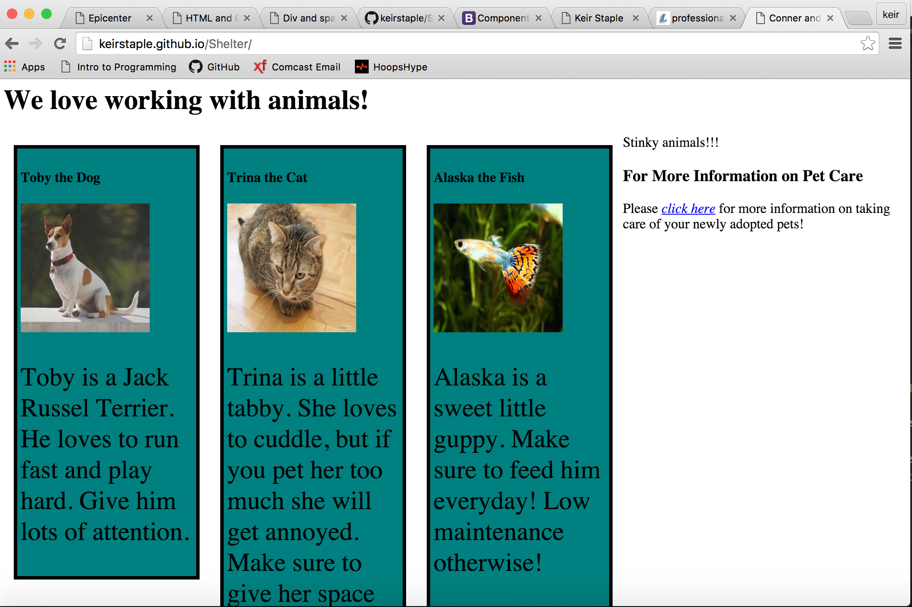
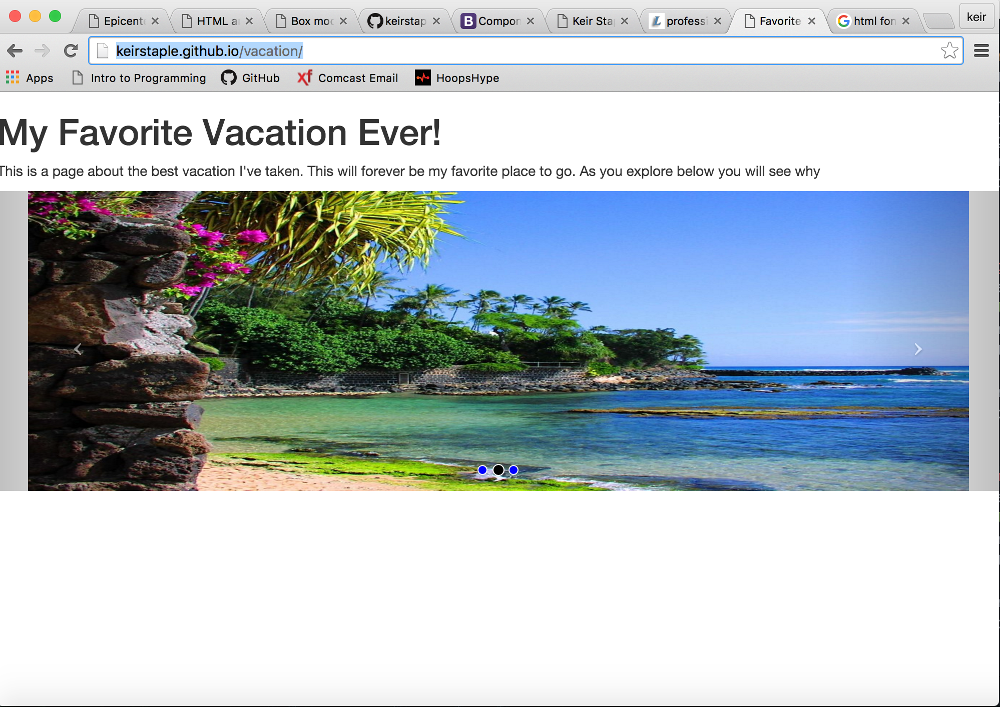

This was a blog page we created to further expand our knowledge of "div" and "span" tags. We wanted to learn more about grouping together sections of our pages and styling them differently from one another. My partner and I utilized HTML and CSS to create our blog page. Ad exerci eloquentiam vis, no pro solum salutandi. Animal integre qui et, no mel etiam iriure dolorum. Eirmod impedit sit eu. Partem aliquando reprimique ut vix.
This was a blog page we created to further expand our knowledge of "div" and "span" tags. We wanted to learn more about grouping together sections of our pages and styling them differently from one another. My partner and I utilized HTML and CSS to create our blog page. Ad exerci eloquentiam vis, no pro solum salutandi. Animal integre qui et, no mel etiam iriure dolorum. Eirmod impedit sit eu. Partem aliquando reprimique ut vix.
This was a page for an animal shelter we created to practice the box model. This allows us to add a margin, border and padding around web page content. The top of this page was created using this very model. My partner and I used HTML and CSS to create our shelter page. Ad exerci eloquentiam vis, no pro solum salutandi. Animal integre qui et, no mel etiam iriure dolorum. Eirmod impedit sit eu. Partem aliquando reprimique ut vix.
This was a page for our favorite vacation spot we created to begin learning the Bootstrap framework. Out of everything in my sparse portfolio, this is by far my favorite sample. Although the content is minimal, the coding behind building the carousel was a large leap for me. My partner and I used HTML and CSS to create our vacation page and linked to Bootstrap's Javascript plugin library using jQuery. Ad exerci eloquentiam vis, no pro solum salutandi. Animal integre qui et, no mel etiam iriure dolorum. Eirmod impedit sit eu. Partem aliquando reprimique ut vix.